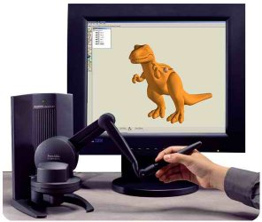
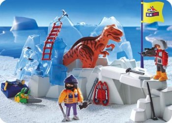
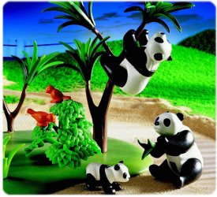

|
Lider
Alman oyuncak üreticisi SensAbleT FreeForm Modeling PlusT
sistemini süreçlerine dahil ederek tasarým ve ürün geliþtirme
prosesini hýzlandýrýyor;
Avrupa'da
geobra Brandstätter, Playmobil (www.playmobil.com)
plastik figürleri, hayvan figürleri, her türlü canlý dünyalarý
(çiflik hayatý, þehir hayatý, dinazorlar, tarih öncesi devir)
ile tanýnýr. Bunlara ek olarak uzaktan kumanda ile kontrol
edilen botlarý ve çeþitli araçlarý ile de bilinmektedir.
Bu
oyuncak üreticisi þirket, SensAble FreeForm Modeling PlusT
sistemi ile 2001 yýlýnýn baþýndan beri çalýþmaktadýr. Endüstriyel
tasarýmcýlarýn gösterdiði heves ve sistemin kapsamlý kullaným
alaný sayesinde 2002 yýlý sonunda ikinci bir sistem daha firma
bünyesine dahil edildi. Bunda sonra da firma her yýl birer
sitem daha bünyesine ekleyerek toplam FreeForm Modeling PlusT
sistem sayýsýný 4 adete çýkarmýþtýr. Tasarým departmaný her
yýl yeni tasarýmlarýn kombinasyonu olarak 80 yeni parça ve
yaklaþýk 10.000 adet arþivlenmiþ parça elde ediyor.
Endüstriyel
tasarýmcý Uwe Reuter FreeForm Modeling PlusT sistemi ile v3.0'dan
beri çalýþýyor. Baþlangýçta kuþku ile yaklaþsa bile daha sonra
farklý modelleri hýzlý bir þekilde oluþturma ve üzerinde hýzlý
deðiþiklikler yapabilmenin avantajlarýnýn farkýna vardý. Tasarým
takýmý, FreeForm Modeling Plus sistemi baþýnda bir araya geldiklerinde
modellemeyi yapan kiþi interaktif bir þekilde tartýþtýklarý
konu üzerinde deðiþiklikler yapabiliyor. Böylece dakikalar
içerisinde 3 ya da daha fazla model versiyonlarý ortaya çýkarýlýp
deðerlendirilebiliyor.
Sistemin
kullaným kolaylýðýný göstermek için Reuter daha önce hiç bilgisayar
üzerinde çalýþmamýþ meslektaþý Karin Eskofier'e FreeForm'dan
bahseder. Ýlk zamanlarda Karin dinozarlor, pandalar ya da
diðer hayvan formlarýný bilgisayardaki kil ile modelleyebileceðini
düþünemez. Þimdi ise FreeForm® Modeling PlusT sistemi olmadan
çalýþmayý düþünemiyor.
Reuter'e
göre FreeForm Modeling Plus sistemi ile Playmobil harika bir
kombinasyon oluþturuyor. Tasarýmlar ve teknik deðiþiklikler
sistem ile kolay bir þekilde yapýlabiliyor. Her çeþit modeller
CAD departmaný tarafýndan revize edilebiliyor - Deðiþiklik
yapýlan model, hem suda hem de karada giden araçta olabilir
ya da bir bot.
|  |
|
Playmobil-Dinazor-Serisi
"Toy Innovation 2004" ödülünü kazandý
|
Bugünkü
dijital üretim prosesi:
FreeForm
Modeling Plus sisteminin firmadaki iþ akýþýna girmesiyle birlikte
Playmobil'deki konvensiyonel prototipleme yöntemi son üç yýlda
geniþ bir þekilde deðiþmiþ durumda.
Bugün,
tasarýmcý baþlangýç aþamasýndaki tasarýmlarýný sistem ile
dijital olarak yapýyor ve hýzlý prototip cihazlarý (örnek:
www.cadem.com.tr/3dsystems/invision)
sayesinde ilk prototipler elde ediliyor ve bu prototipler
üzerinde görünüþ, entegrasyon gibi kontroller ürün kalýba
gitmeden gerçekleþtiriliyor.
Kalýp
kriterlerine göre model revize edildikten sonra model datasý
ve kullanýcýnýn belirlediði kalýp ayýrým yüzeyleri ve eðrileri
IGES dataya çevrilerek FreeForm datasýnýn proses zincirine
entegrasyonu saðlanýyor. CAD/CAM yazýlýmý içersine alýnarak
"assembly" çalýþmasý sonuçlandýrýlýyor.
Geometriye
göre baðýmlý olarak modeller sadece draft aþamasýnda deðil
kalýp oluþturma aþamasýnda da kullanýlýyor. Michael Friedrich,
FreeForm Modeling PlusT sistemi ile versiyon 5.0'dan beri
çalýþýyor ve farklý, yeni modelleme tekniklerini test etmekten
hoþlanýyor. Tasarýmcý ya da heykeltraþlardan aldýðý FreeForm
modelleri üzerinde, üretim kriterleri olan düz bir kalýp ayýrým
çizgisi oluþturma, kalýptan çýkamayacak yerleri giderme, kalýp
araçlarýnýn pozisyonlarýný belirleme gibi konularda modifikasyonlar
yapýyor. Bundan sonra datayý CAD uzmaný olan Christian Winter'a
teslim ediyor.
FreeForm®
Modeling PlusT sistemi ile çalýþmanýn avantajlarý:
Reuter'e
firma bünyesine niye FreeForm Modeling PlusT sistemini entegre
ettikleri sorulduðunda iki çok önemli sebepten bahsediyor.
"Bir taraftan sistemi gerçekten hýzlý bir þekilde öðrenebilir
ve kullanabilirsiniz, ayrýca sistem modelleriniz üzerinde
hýzlý farklý versiyonlar oluþturmanýz için çok esnek bir alt
yapýya sahip."
|  |
|
FreeFom
Modeling Plus sistemi kullanarak yapýlan ilk projelerden
biri
|
Michael
Friedrich ise modelleme hýzýndan çok etkilenmiþ ve "FreeForm
Modeling Plus sistemi ile tasarým prosesi sýrasýnda dijital
ortamda direkt dijital modele temas ederek çalýþmak büyük
bir avantaj. El ile modellerin oluþturulmasý ve bu modellerin
sayýsallaþtýrýlmasý, ardýndan iþlenmesi sýrasýnda meydana
gelebilecek data kaybý artýk bir endiþe olmaktan çýkýyor"
diye ekliyor. Ýkinci olarak eðer tasarým üzerinde bir deðiþiklik
gerekiyorsa hem tasarýmcý hem de kalýptan sorumlu kiþi ayný
sistemi (FreeForm Modeling Plus) kullandýklarýndan model üzerinde
deðiþiklik yapabiliyorlar.
CAD
uzmaný Christian Winter ise versiyon 3'ten beri sistem üzerine
gelen deðiþikliklerden ve FreeForm Modeling Plus sisteminin
sunduðu avantajlardan duyduðu memnuniyetini dile getiriyor.
Geleneksel CAD sistemlerine göre geometri açýsýndan en büyük
avantaj olarak özellikle model modifikasyonlarýnda saðladýðý
esneklik ve bununla formu deðiþtirebilme olarak dile getiriyor.
Sonuç:
geobra
Brandstätter GmbH & Co. KG firmasý el iþçiliðinden modern
dijital teknolojinin avantajlarýný kullanmaya geçiþin iyi
bir örneði. Bu geçiþ FreeForm Modeling PlusT sisteminin ürün
geliþtime entegrasyonunun baþarýsýný ve yeni dijital teknolojinin
avantajlarýný gösteriyor.
Not:
Bu yazý ve resimler SensAble
Technologies'in izni alýnarak kullanýlmýþtýr.
FreeForm sistemi hakkýnda daha fazla bilgi için:
 Ýrtibat: Ýrtibat:
Cadem CAD/CAM Destek Merkezi A.Þ.
www.cadem.com.tr
Metropol Center 32/52 Merter / Ýstanbul
Tel: (212) 481 75 09
|